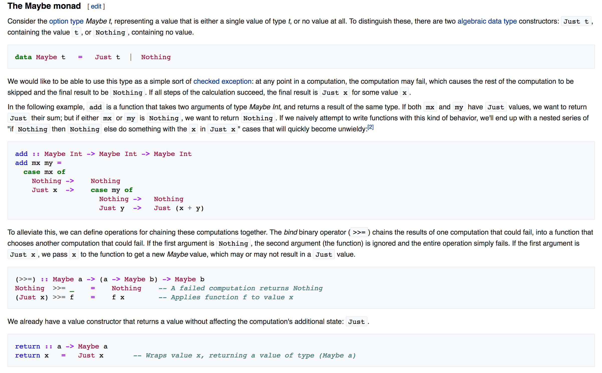

https://en.wikipedia.org/wiki/Monad_(functional_programming)

Project = Struct.new(:creator)
Person = Struct.new(:address)
Address = Struct.new(:country)
Country = Struct.new(:capital)
City = Struct.new(:weather)
def weather_for(project)
project.creator.address.country.capital.weather
end
>> bad_project = Project.new(Person.new(Address.new(nil)))
=> #
>> weather_for(bad_project)
NoMethodError: undefined method `capital' for nil:NilClass
def weather_for(project)
unless project.nil?
creator = project.creator
unless creator.nil?
address = creator.address
unless address.nil?
country = address.country
unless country.nil?
capital = country.capital
unless capital.nil?
weather = capital.weather
end
end
end
end
end
end
class Object
def try(*a, &b)
if a.empty? && block_given?
yield self
else
public_send(*a, &b) if respond_to?(a.first)
end
end
end
class NilClass
def try(*args)
nil
end
end
def weather_for(project)
project.
try(:creator).
try(:address).
try(:country).
try(:capital).
try(:weather)
end
>> optional_string = Optional.new('hello')
=> #<struct Optional value="hello">
>> optional_string.value
=> "hello"
>> optional_string = Optional.new(nil)
=> #<struct Optional value=nil>
>> optional_string.value
=> nil
class Optional
def and_then(&block)
if value.nil?
Optional.new(nil)
else
block.call(value)
end
end
end
>> optional_string = Optional.new('hello')
=> #<struct Optional value="hello">
>> length = optional_string.try(:length)
=> 5
>> optional_string = Optional.new(nil)
=> #<struct Optional value=nil>
>> length = optional_string.try(:length)
=> nil
def weather_for(project)
Optional.new(project).
and_then { |project| Optional.new(project.creator) }.
and_then { |creator| Optional.new(creator.address) }.
and_then { |address| Optional.new(address.country) }.
and_then { |country| Optional.new(country.capital) }.
and_then { |capital| Optional.new(capital.weather) }.
value
end
class Optional
def method_missing(*args, &block)
and_then do |value|
Optional.new(value.public_send(*args, &block))
end
end
end
def weather_for(project)
Optional.new(project).creator.address.country.capital.weather.value
end
def weather_for(project)
project.creator.address.country.capital.weather
end
Optional = Struct.new(:value) do
def and_then(&block)
if value.nil?
Optional.new(nil)
else
block.call(value)
end
end
def method_missing(*args, &block)
and_then do |value|
Optional.new(value.public_send(*args, &block))
end
end
end
drobazko@gmail.com